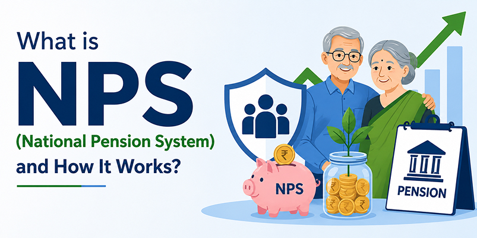

What is NPS (National Pension System) and How It Works?

Planning for retirement is one of those things most people know they should do, but often delay. It usually starts with small savings, maybe a fixed deposit or a basic plan suggested by someone. But over time, you realise that just saving isn’t enough, your money also needs to grow. That’s where the national pension system slowly starts becoming relevant.
What makes it different is that it doesn’t feel like a rigid, one-size-fits-all plan. Instead, it gives you a way to build your retirement fund step by step, while still having some say in how your money is invested. In this blog, you will learn how NPS actually works in real life, what you should know before investing, and whether it fits your long-term plans.
What is NPS?
The National Pension System (NPS) is a retirement-focused investment option backed by the government and regulated by the Pension Fund Regulatory and Development Authority (PFRDA). It was earlier limited to government employees, but today almost anyone can open an account, including minors & NRIs.
Think of it as a long-term habit rather than just a product. You keep contributing during your working years, and that money gets invested across equity, corporate bonds, and government securities. Over time, it builds into a retirement corpus. When you retire, you can take a part of it out and use the rest to receive a regular pension for self and spouse, after them, the corpus will be paid to the nominee.
How Does NPS Work?
NPS is structured around two types of accounts: Tier I and Tier II. The Tier I account is the primary account meant for retirement savings, and it is mandatory if you want to invest in NPS. The Tier II account is optional and can only be opened if you already have an active Tier I account. In addition, one more new investment pattern is introduced recently, which is Multi Scheme Framework (MSF), where the equity component can go as high as 100%. PFMs are given the liberty to launch any new scheme under MSF to cater to the needs of investors.
Once you start contributing, your money is invested by professional fund managers across different asset classes like equity, corporate bonds, and government securities. You can choose how your money is allocated, or you can go with an automatic option where the allocation adjusts based on your age.
At Integrated, we’ve seen that people who treat NPS like a long-term habit rather than a yearly tax-saving tool tend to get better results. Small, consistent contributions over time usually matter more than trying to time the market.
Key Features of NPS
One thing that stands out immediately is how low the costs are. Compared to many traditional plans, the charges here are quite minimal. Over a long period, this difference actually adds up and helps your money grow better.
Then there are the tax benefits, which make it appealing for salaried individuals. You can reduce your taxable income while also building a retirement fund, which is a practical combination. Under this, the employer can also contribute, for which employees are eligible for tax benefits. Only the instrument qualifies under the new tax regime. In addition, there is no long-term capital gains tax at the time of exit from superannuation.
Another aspect people appreciate is the flexibility. You are not locked into a fixed structure. You can change your fund manager or tweak your allocation if needed.
How Returns are Generated
This is where NPS feels a bit different from traditional options. The returns are not fixed, they depend on the market. Your money is spread across equity and debt, which means there will be ups and downs along the way.
But over the long term, this mix usually helps balance things out. Equity adds growth, while bonds bring some stability. If you stay invested for enough time, the fluctuations tend to smooth out.
If you are someone who likes to see numbers before starting, an NPS scheme calculator can give you a rough estimate. It won’t be exact, but it helps set expectations and makes planning easier.
Is NPS the Right Choice for You?
There’s no perfect answer when it comes to choosing a retirement plan in India. It really depends on how you think about money and risk.
If you prefer something completely safe and predictable, NPS might feel a bit uncertain because of its market-linked nature. But if you are okay with some ups and downs in exchange for better long-term growth, it can be a solid option.
At Integrated, we usually suggest not relying on just one product. NPS works best when it’s part of a bigger plan, something that combines safety, growth, and flexibility.
Conclusion
NPS isn’t something that shows quick results, and that’s actually the point. It’s meant to quietly build your retirement fund in the background while you focus on your career and life.
What really matters here isn’t trying to get the highest return every year, but staying consistent. Even small contributions, done regularly, can turn into something meaningful over time.
If you’re someone who wants a structured way to plan for retirement without overcomplicating things, NPS can fit in quite well. And when it’s combined with the right mix of other investments, it can help you move closer to a more comfortable and predictable financial future.
Open your NPS account today and take the first step towards a secure retirement.
Disclaimer - The information provided in this blog is for educational and informational purposes only and should not be considered investment advice or a recommendation to buy or sell any financial instruments.
FAQs
1. What is NPS (National Pension System)?
NPS is a retirement-focused investment option backed by the government and regulated by PFRDA. It helps you build a retirement corpus by investing in equity, corporate bonds, and government securities over time.
2. What are Tier I and Tier II accounts in NPS?
Tier I is the main retirement account and is mandatory to invest in NPS. Tier II is optional and can only be opened if you already have an active Tier I account.
3. How are returns generated in NPS?
Returns in NPS are market-linked and depend on the performance of equity and debt investments. Equity provides growth, while bonds help bring stability over the long term.
4. Can I choose how my money is invested in NPS?
Yes, you can decide how your money is allocated across different asset classes or choose an automatic option where allocation changes based on your age.
5. Is NPS suitable for everyone?
NPS may suit those who are comfortable with some market fluctuations in exchange for long-term growth. It works best as part of a broader retirement plan rather than being the only investment.